Copyright © 2005 International Business Machines Corp.
Inside
the Workbench
A guide to the workbench internals
Summary
This article describes how the Eclipse 3.1 workbench works, in
particular the infrastructure for views and editors. The goal is to
teach you about important classes in the workbench, and how they
interact. A familiarity with the basic workbench APIs for views,
editors, action sets, and so forth is assumed.
Stefan Xenos, IBM
October 20, 2005
Table of Contents
1
Introduction
This document describes workbench internals and not API. The design of
internals changes frequently. For information on newer Eclipse versions,
the latest version of this document can be found on the
UI
development resources page
.
Figure
1: Ownership of views and editors
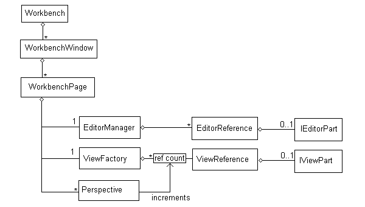
Figure 1 shows how views and editors are owned by the workbench.
The Workbench contains one or more WorkbenchWindows, each of which
contain zero or more WorkbenchPages. The WorkbenchWindow supplies the
trim widgets, and the WorkbenchPage supplies the window contents. In
theory, a WorkbenchWindow can contain any number of pages, but in
practice there is never more than 1 page in a window.
Views and editors are owned by the page, through a ViewFactory and
EditorManager respectively. EditorManager stores the list of editors and
their shared resources, and ViewFactory stores a reference counted list
of views. The workbench works in terms of EditorReferences and
ViewReferences, and in this article the terms "editor" or "view" will
refer to these classes specifically. In situations where the distinction
between editors and views is not important, we will simply use the term
"part". The implementation of the part (typically an IEditorPart or
IViewPart) is created lazily when it is first needed. As shown in Figure
2, a part reference exists for every tab but the implementation is only
created the first time it becomes visible.
The page owns a set of perspectives. Perspectives contain a layout and
information about what action sets to enable. Although perspectives
appear to contain views and the editor area, they only own a layout. The
page itself maintains a reference count for how many perspectives are
using each view, and has complete ownership of the parts and editor
area.
Not shown in figure 1 are the classes PerspectiveHelper and
EditorAreaHelper. These classes exist largely for historic purposes, and
in this article we will treat the former as though it were part of the
Perspective class and the latter as part of the WorkbenchPage class.
Figure
2: Workbench objects and what they look like
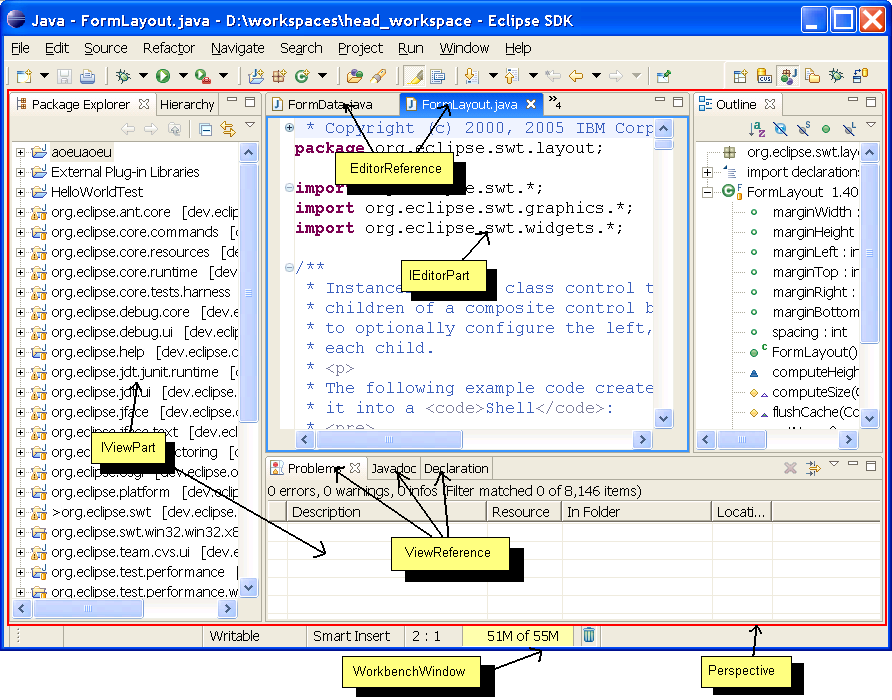
2 Inside a part
Figure 3: Anatomy of a part
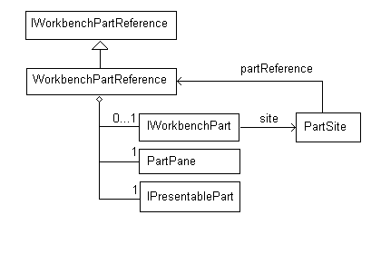
Internally, a part consists of several objects (Figure 3).
WorkbenchPartReference is the topmost representation of the part.
Depending on where it is used, the part reference is often exposed as
IWorkbenchPartReference, IViewReference, IEditorRefenece, or
IPresentablePart, or PartPane. These are essentially different
interfaces to the same object. The I*Reference interfaces are
implemented directly by WorkbenchPartReference and its subclasses.
IPresentablePart is a simple adapter that redirects its methods directly
to the part. PartPane implements the LayoutPart protocol which is needed
to insert the part into the workbench layout. PartPane also manages the
SWT resources (such as a top-level control) that are needed to include
the control in the workbench layout.
The part implementation (the IEditorPart or IViewPart) is owned by the
reference. When the implementation is created, it is given a PartSite.
The PartSite (seen by client code as an IWorkbenchPartSite, IEditorSite,
or IViewSite) allows the client code to communicate with the reference
and manages services created for the implementation.
WorkbenchPartReferences allocates SWT resources lazily as needed. Once
created, the part reference must be explicitly disposed. Disposing the
reference cleans up all of its resources (including the part
implementation itself) and guarantees that the reference will never
allocate additional resources. The workbench page disposes the part
reference once it is certain that it will never need to use that part
again. Unlike SWT controls, it is valid to continue using the reference
after it has been disposed. A disposed part reference is unlikely to do
anything interesting besides returning its name and cannot be used with
any methods in the workbench page. Since it is hard (or impossible) for
clients to track the lifecycle of the reference, they are permitted to
continue using its public interface after disposal.
2.1 Part Lifecycle
Figure
4: WorkbenchPartReference states
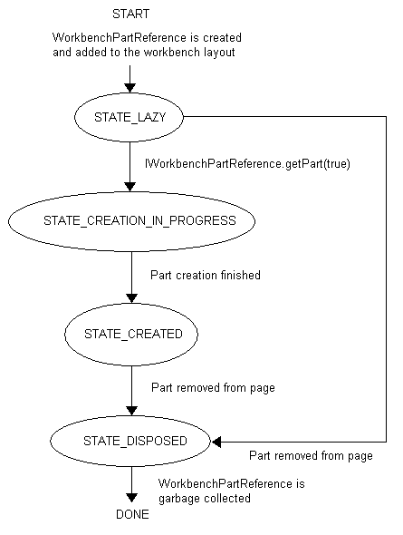
Figure 4 shows the part lifecycle as a state machine. The part reference
stores its current state in the integer state field.
Notes:
- The part is in a distinct state while it is in the process of
creating the implementation. It cannot be recursively re-created or
disposed while it is in this state.
- The part implementation cannot be recreated once the reference has
been disposed.
- Parts cannot return to the lazy state once they have been created.
This is a limitation in the 3.1 implementation, not a functional
requirement.
- It is valid to continue using the public interface of
WorkbenchPartReference once it has been disposed, however a disposed
reference cannot be passed to methods in workbench page (since it is,
by definition, no longer part of any page).
2.2 Part Construction
Figure
5: Message sequence for creating a part
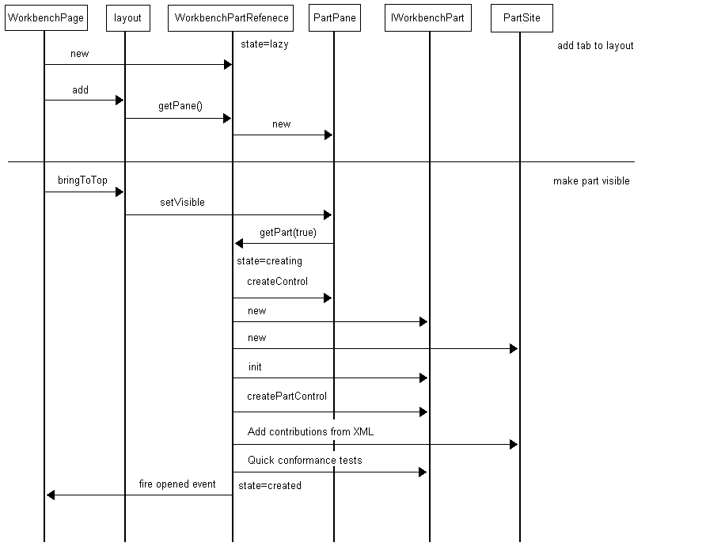
Figure 5 shows the process for creating a part. The horizontal line
separates the two phases of creating a part. First the part is added to
the layout, and then a real implementation is attached. These are two
distinct operations, and the part can exist as a tab in the page with no
implementation for some time before it becomes visible. This diagram
focuses on the interactions with the part reference, and skips the
details of adding the part to the presentation and creating the part
site.
Suggestion: there are situations where it would be useful to only add
the part to the layout if it can be created successfully (this would be
necessary to pass a PartInitException thrown in the implementation's
init method up through IWorkbenchPage.openEditor). In these situations,
it would be possible to merge both operations into one atomic operation
by creating the part before adding it to the layout. It is unknown if
this would create event ordering bugs in client code.
3 Workbench Layout
Figure
6: LayoutPart hierarchy
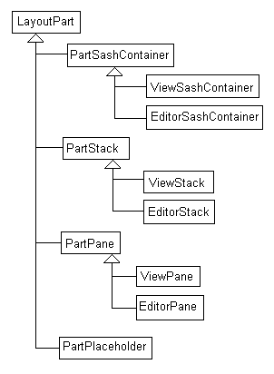
The workbench layout provides supports arranging parts using drag &
drop, resizing and detaching parts, fast views, etc. This section gives
a quick overview of the layout mechanism.
Anything in the workbench layout is a LayoutPart. A LayoutPart manages a
set of widgets in a rectangular region of the screen, can contain or
arrange other layout parts, returns size constraints, responds to drag
events, etc. To this extent, a LayoutPart is very similar to a custom
SWT Control. However, LayoutPart differs from Control in several
important ways.
- The LayoutPart hierarchy is not the same as the widget hierarchy.
Even though one LayoutPart may contain another, their widgets may be
peers. This allows drag and drop to work on platforms where SWT doesn't
support reparenting, since a LayoutPart can be reparented without
reparenting its widgets.
- LayoutParts mainly perform layout-related tasks, unlike Controls
which also supply behavior and appearance. The behavior of a LayoutPart
is supplied by the widgets it arranges.
- LayoutParts know about higher-level concepts like zoom, and can
specify constraints about their own size.
Figure 6 shows the LayoutPart hierarchy. Notice the symmetry between the
View* classes and the Editor* classes. These classes exist largely for
historical reasons, and it should be possible to move all of the
functionality into the Part* base classes or other objects in the
system. Since all of the interesting behavior comes from the Part*
classes, the remainder of this section will focus on them without
describing the minor differences between views and editors.
PartSashContainer arranges a set of child parts separated by a bunch of
sashes. This is the object that implements the most visible aspects of
the workbench layout. It arranges rectangular regions separated by
sashes, and allows new regions to be created by splitting old ones. It
also supports the size constraints that make minimized views possible,
and determines what it means for one of these regions to be maximized.
Typically, a PartSashContainer contains a bunch of PartStacks, although
it is also possible for it to contain another PartSashContainer. The
latter case occurs since the editor area and the perspective both use a
PartSashContainer for their layout and one is embedded inside the other.
PartSashContainer owns its stacks but does not own an embedded
PartSashContainer. In a workbench window, there is one PartSashContainer
for each perspective and one for the editor area itself.
PartStack arranges a stack of PartPanes. PartStack allows the
presentation API to participate in the workbench layout. The code for
creating the tabs and arranging parts is supplied by the active
presentation.
PartPane allows views and editors to participate in the workbench
layout. Although PartPanes are arranged by PartStacks they belong to
part reference, not the stack. The same PartPane can exist in more than
one PartStack at a time if that part appears in more that one
perspective.
3.1 An example layout
LayoutParts are best explained through example. Imagine a
WorkbenchWindow that contains custom Java and Java Browsing perspectives
that look like Figure 7 and Figure 8 respectively.
Figure
7: Example Java Perspective
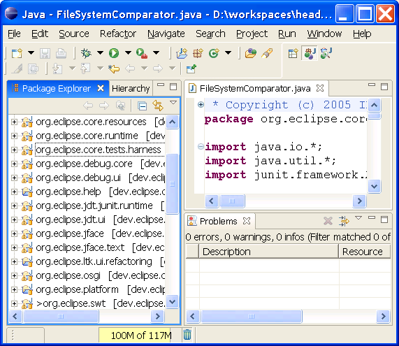
Figure 8: Example Java Browsing
perspective
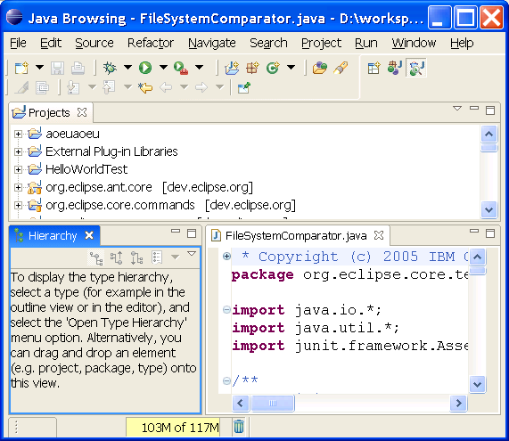
Assume that the window resembles Figure 7. In this case, the Java
perspective is active, the Java Browsing perspective is hidden, and the
objects are connected as shown in Figure 9:
Figure
9: LayoutPart instances when two perspectives are open
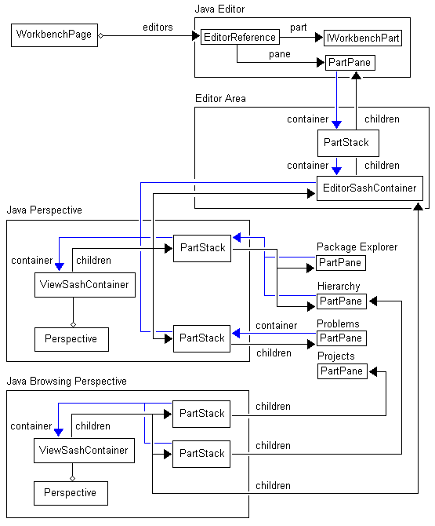
All LayoutParts have a container pointer that points to the object that
is currently managing their position. Since the same LayoutPart instance
may exist in more than one perspective at once, this pointer points to
the part's container in the currently-active perspective. In the case of
the projects view, above, the part is not in the current perspective so
its container pointer is null. When another perspective becomes active,
all the container pointers move to the new perspective. For historical
reasons, this is accomplished by setting and clearing the contianer
pointer when the container becomes visible or invisible. This works
since only one perspective is visible at a time, but it also means that
perspectives cannot be manipulated when they are invisible.
The diagram shows the internal objects that make up the only editor.
Although this detail has been omitted for the views, they would look
similar. Each view's PartPane is owned by a part reference which may
have an associated part implementation.
3.2 Zoom / Unzoom
protocol
The notion of "zoom" is defined locally between a part and its immediate
container. Zoom changes are triggered bottom-up. A part asks its parent
to "zoom me", and the parent either does something with the request or
forwards the request up to its parent. Each container determines what it
means for a child to be zoomed. Once a part's zoom state changes, its
parent notifies it by calling setZoomed. The part may in turn zoom or
unzoom one or more of its children.
Anything that can contain LayoutParts must implement the following
methods, to support zooming:
/**
* Called by child parts to request a zoom in,
given an immediate child
*
* @param toZoom part to zoom in on
*/
public void childRequestZoomIn(LayoutPart toZoom);
/**
* Called by child parts to request a zoom out
*/
public void childRequestZoomOut();
/**
* Returns true iff the given child is obscured
due to the fact that the container is zoomed into
* another part.
*
* @param toTest part to test
* @return true iff the part is currently
obscured
*/
public boolean childObscuredByZoom(LayoutPart
toTest);
/**
* Returns true iff we are zoomed into the given
part, given an immediate child of this container.
*
* @param toTest part to test
* @return true iff this contianer is currently
zooming in on the given part
*/
public boolean childIsZoomed(LayoutPart toTest);
Consider again Figure 7. If we were to double-click on the java editor
to zoom it, the LayoutParts would send messages to one another in the
following sequence. (In this diagram, each cell represents a method
call. Each column is an object. The reciever's column shows the method
name and the caller contains an arrow. Rows are in ascending order of
time.)
Java Editor
(PartPane)
|
PartStack
|
editor area
(EditorSashContainer)
|
ViewSashContainer
|
requestZoomIn
|
|
|
|
|
childRequestZoomIn(java editor)
|
|
|
|
|
childRequestZoomIn(java editor's
part stack)
|
|
|
|
if there were other editor stacks in
the layout, we would call setVisible(false) on them here |
|
|
|
remember the partStack as the zoomed
part
|
|
|
setZoomed(true)
|
|
|
setZoomed(true)
|
|
|
|
|
|
|
childRequestZoomIn(editor area)
|
|
|
|
call setVisible(false) on all
PartStacks for views in the perspective
|
|
|
|
remember the editor area as the
zoomed part
|
|
|
setZoomed(true)
|
|
|
|
|
trigger a layout
|
|
|
setBounds(zoomed bounds)
|
|
|
setBounds(zoomed bounds) |
|
|
| setBounds(zoomed bounds) |
|
|
|
|
|
trigger a layout (nothing to do)
|
|
3.3 Layout protocol
Every LayoutPart can specify constraints on their size. Parts specify
constraints by implementing the ISizeProvider interface. ISizeProvider
serves a similar function as the computeSize method on an SWT control,
in that the parent layout uses it to consult with the part when
computing the part's size. ISizeProvider can provide a variety of
constraints:
Constraint type
|
Meaning
|
Minimum size
|
Given the available space along one
dimension, the part returns the minimum size that it can be
compressed to along the other dimension. For example, a stack would
typically set its minimum size to be large enough to fit its tabs.
The information about available perpendicular space could allow a
stack to have wrapping tabs and still reserve enough vertical space
for the tabs once they are wrapped to fill the available horizontal
space.
|
Maximum size
|
Given the available space along one
dimension, the part returns the maximum size that it can utilize
along the other dimension. For example, minimized stacks are
implemented by setting their maximum size to the minimized size.
Non-minimized stacks typically have an unbounded maximum size.
|
Preferred size
|
Given the availble space along one
dimension and a preferred size, this returns the size closest to the
preferred size at which the part would look best. Parts can use this
to quantize their size. For example, a part can ensure that its size
is always chosen such that it can be completely filled with toolbar
icons leaving no space left over.
|
Although there are three kinds of constraints, they are all returned
using a single method. See the JavaDoc on ISizeProvider for more
information.
Whenever a size constraint changes, the part notifies its contianer by
calling resizeChild(part). This tells the container to respond to the
new constraints, and to resize the child if necessary (suggestion: if
this is ever exposed as API, it would be better to separate the concerns
of notifying the parent of changes and triggering a layout. In general,
it may be possible for more than one part to change without requiring a
layout between each change).
3.4 PartStack:
Communicating with the Presentation API
PartStack allows presentation to participate in the workbench layout. As
shown in Figure 10, it wraps a single instance of StackPresentation, and
allows it the presentation to manipulate parts by converting each
visible part into an IPresentablePart. The part stack outlives the
StackPresentation. Whenever the part stack needs widgets, it creates the
StackPresentation. If the widgets are no longer needed, it disposes the
StackPresentation and remembers its persisted form. Whenever the
PartStack persists its StackPresenation, it remembers the presentation
ID so that it will not try to restore one StackPresentation from state
saved by an incompatible presentation.
Figure
10: Anatomy of PartStack
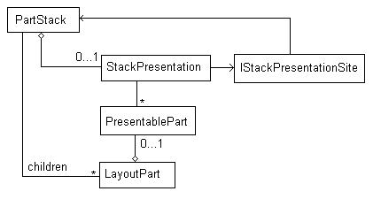
Suggestion: it would be useful to update this document with a state
diagram for PartStack, and message sequence charts for initializaiton
and part activation.
3.5 PartSashContainer:
The main workbench layout
Figure
11: PartSashContainer
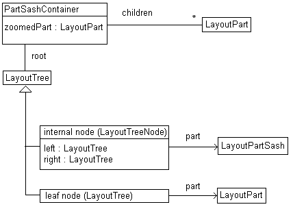
PartSashContainer implements the main layout for a perspective and the
editor area. As shown in Figure 11, PartSashContainer contains a list of
children, a (possibly null) zoomed part, and a LayoutTree that manages
the actual layout.
LayoutTree is a binary tree (technically, a KD tree). Each internal node
is an instance of LayoutTreeNode. It contains a draggable sash
(LayoutPartSash) that divides its area among its left and right
children. LayoutTreeNodes can be horizontal or vertical based on the
orientation of the sash. For horizontal nodes, the "left" child is on
top and the "right" child is on the bottom. Leaf nodes are instances of
LayoutTree (the base class), and they point to a LayoutPart that
occupies that region of the screen. Normally, this is a PartStack, but
in general it can be any LayoutPart.
Each LayoutTree occupies a recangular region of the screen that
encompasses its children. Internal nodes keep track of an integer size
for each child (implementation note: the sizes are stored in the
associated LayoutPartSash, not the LayoutTreeNode itself). Normally, the
left and right sizes are used as a ratio for dividing up the available
space. However, when one child contains the editor area, the other
becomes "non-compressible". If one side in non-compressible, the size
value is interpreted as a fixed pixel size rather than a ratio. When the
sash is moved, the size values are set to the current pixel sizes of the
left and right children.
Figure 12 shows an example LayoutTree. If this tree were rendered in a
workbench window, it would resemble Figure 3.5.3. The tall vertical sash
separating the package explorer from the editor area is the root node.
The left child is the leaf node holding the package explorer's stack.
The right node is the horizontal sash separating the problems view from
the editor area. The editor area itself is a PartSashContainer, which
has its own LayoutTree. Note that the rounded rectangles in Figure 3.5.2
are LayoutParts. The upper portion of the rectangle is the part type and
the lower portion is some text to help locate the part in the
screenshot. In this example, every internal node has the editor area on
one side of it, so all sizes are interpreted as pixel sizes and not
ratios.
Figure 12: Example LayoutTree
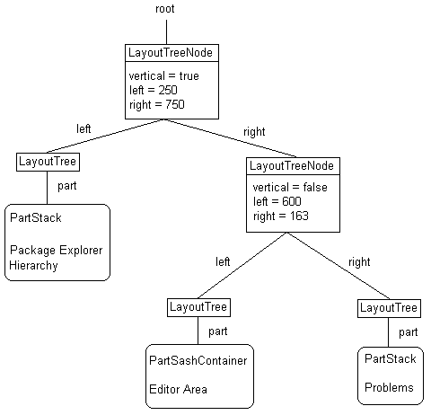
Figure 13: Example perspective
Like LayoutParts, LayoutTrees also implement ISizeProvider and support
size constraints. For external nodes, the size constraints come directly
from the LayoutPart. For internal nodes, the size constraints are
computed from the child nodes as follows:
- When computing a constraint perpendicular to the sash, the result
is the sum of the constraints of the children plus the width of the
sash.
- When computing a constraint parallel to the sash, the result is the
maximum of the constraints of the children
An example can help make this a little less abstract. Imagine we're
computing the minimum width for the root node in Figure 12, which is a
tall vertical sash. Width measurements are perpendicular to the sash, so
we end up with case 1. The minimum width is the minimum width of the
left stack plus the sash width plus the minimum width of the right
child. This makes sense because if we made the root node any smaller,
one of the three would need to be truncated or made smaller than their
minimum size.
The "right child" mentioned above is the horizontal sash separating the
problems view from the editor area. When computing its minimum width, we
hit case 2: the minimum width of a horizantal sash is the maximum of the
minimum widths of each child. Intuitively, this means that the child
with the larger minimum size will be the first to reach its minimum when
the layout gets small.
3.6 Drag / Drop
Figure
14: LayoutPart drop regions
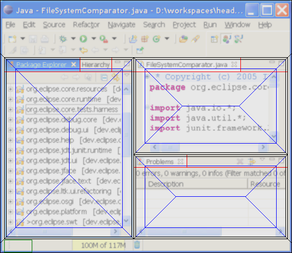
Dragging a workbench part is triggered by calling DragUtil.performDrag.
SWT controls can respond to drag / drop by registering an
IDragOverListener with DragUtil .addDragTarget. If multiple drag
listeners are registered for the same screen position, the one
associated with the most specific control gets precidence.
Rather than register drag listeners directly, LayoutParts implement a
getDropTarget method. When the window recieves a drag event, it
delegates to the top-level LayoutPart's getDropTarget. Each part either
delegates to one of its children or handles the drag event directly. If
the part returns null from getDropTarget, this means that the part has
no special preference for the drop event, and the parent may provide a
default behavior. Unlike IDragOverListener, getDropTarget works
top-down. The parent may overload any drag regions that are recognized
by the child, or provide default behaviors for drag regions not
recognized by the child.
Figure 14 shows regions of the workbench where LayoutParts can be
dropped. The workbench checks these regions in the following order:
1.
green region
|
The fast view bar registers a
IDragOverListener that responds to views being dragged.
|
2. black regions
|
These areas are reserved by
PartSashContainer.getDropTarget. When the user drags a part over this
region, the PartSashContainer interprets this as a split and does not
ask its child to participate in the drag. This ensures that it is
never possible for the child to prevent splitting by reserving its
entire area as a drop region. The region outside the
PartSashContainer's client area is handled by an IDragOverListener
registered with the shell. This allows parts to be attached to the
edge of the layout by dragging over the window trim.
|
3.
red regions
|
For most of the screen area,
PartSashContainer delegates to its child (PartStack.getDropTarget).
PartStack filters out objects that don't belong in the stack (no
editors in view stacks, etc) and delegates to the presentation
(StackPresentation.dragOver). The default presentation recognizes the
tabs and title area as drop targets, but returns null everywhere
else. This is the best practice for presentations and PartStack since
it permits PartSashContainer to extend the split regions where
possible.
|
4.
blue regions
|
If the child doesn't have any
particular use for the drop location, the PartSashContainer extends
the split regions. If the child allows objects of this type to be
added (determined by calling LayoutPart.allowsAdd), it uses the
center of the rectangle for stacking. Otherwise, the entire region is
used for splitting. The latter case occurs when dragging views over
the editor area or when dragging over a standalone view.
|
5. outside the window (not shown)
|
The workbench page registers an
IDragOverListener that responds to views being dragged outside the
workbench window, and interprets this as a detach operation.
|
By convention, all methods used for drag / drop work in display
coordinates.
4 Action Bars
Parts contribute to menus, toolbars, coolbars, popup menus, etc. using
action bars. Each action bar implements IActionBars. It is possible to
create one action bar as a child of another. In this situation, the
parent and child share the same widgets, but the child may be disabled
independently of the parent. Figure 15 shows how the workbench action
bars are constructed. The rectangles indicate instances of IActionBars,
and the ovals indicate other entities that create or modify action bars.
Figure
15: Action bar information flow
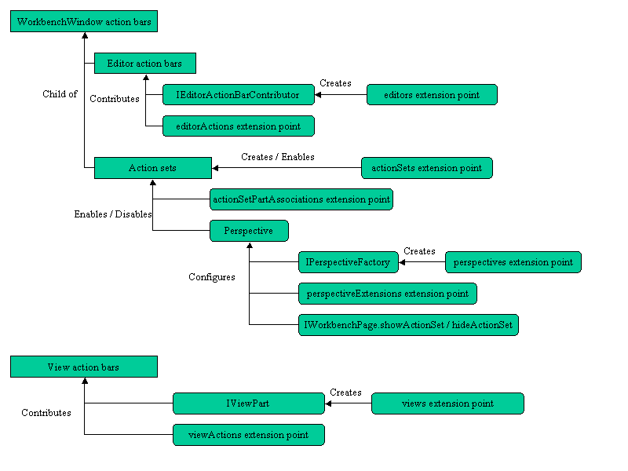
The workbench window has a top level IActionBars instance that
contributes to the main menubar, coolbar, etc. (this top-level object is
returned by WorkbenchWindow.getActionBars()).
4.1 Editor Action Bars
Each type of editor gets a reference-counted IActionBars instance that
is a child of the window's action bars. For example, if the workbench
contains 10 java editors and 10 text editors, it will create one
IActionBars to be shared among the Java editors and another IActionBars
to be shared among the text editors. Editors can access this shared
instance by calling getSite().getActionBars(). Editor action bars are
initialized by an instance of IEditorActionBarContributor, and
additional actions are added by the editorActions extension point.
The reference counted IEditorActionBars are managed by the
EditorManager, along with the IActionBarContributor.
4.2 Action Sets
An action set is an action bar that is identified by ID. Action sets are
contributed by the actionSets extension point, and their action bars are
a child of the workbench window's root action bars. Visibility of action
sets is controlled by the following function:
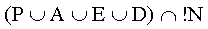
Where:
P = set of actions enabled in the
perspective. Returned by Perspective.getAlwaysOnActionSets().
Initialized by the perspective factory, perspective extensions extension
point, and IWonkbenchPage.showActionSet.
A = action sets associated with the active part (associated by the
actionSetPartAssociations extension point).
E = action sets associated with the active editor (associated by the
actionSetPartAssociations extension point).
D = action sets that are enabled by default (a property of the
actionSets extension markup).
N = action sets that are explicitly disabled in the current perspective.
Initialized by IWorkbenchPage.hideActionSet.
The sets P and N are persisted with the current perspective between
sessions. The sets A and E can change every time the active part or
editor changes.
The workbench page uses the class ActionSetManager to compute action set
enablement. This class keeps two reference counts for each action set:
- a "showCount" indicates how many of P, A, E, and D the action set
appears in
- a "hideCount" indicates whether the action set appears in N
The action set is visible iff showCount is nonzero and hideCount is
zero.
4.3 View Actions
Each view instance is given its own IActionBars instance. Unlike editor
action bars, these are not shared and are not a child of the workbench
window's root action bars. This means that view instances can
programmatically add actions to their action bar. Additional actions are
also added to a view's action bars through the viewActions extension
point.
5 General Conventions
This section describes coding conventions that apply to the entire
workbench.
5.1 Objects must not
be returned through API until they are fully initialized
Some objects require several public methods to be called in a specific
order before they are considered fully initialized. For example, to
initialize an IViewPart, it is necessary to call the constructor,
setInitializationData, init, and createPartControl before the part is
considered initialized. Until
all
of the above have happened successfully, it must not be possible to
reach the object through any API method.
Keep in mind that the object may trigger other client code during its
own initialization, so it should not even be possible for an object to
find itself during construction.
5.2 No method may open
a modal dialog unless its JavaDoc says so
Any method that has the possibility of opening a modal (or of calling
Display.readAndDispatch through any other means) needs to be clearly
documented. All callers of that method must be prepared to handle
background threads running arbitrary code in *syncExecs during the
method call. It is always a bug to open a modal dialog when extending or
overloading a method unless the JavaDoc in the base class says
otherwise. Permitting opening of dialogs in a method that did not
previously do so is a breaking change for all callers of that method.
Some common bugs:
- Views are never allowed to call MessageDialog.openError from their
createPartControls method, especially when handling an exception.
- Parts can be closed in a *syncExec. If a part calls a method that
opens dialogs, it might not still exist when the method returns. After
calling the method, the part must check that it hasn't been disposed
before using their widgets or accessing any members that would have
been deallocated by the disposal.
5.3 Lazy creation
should happen as late as possible
Part implementations should be created at the latest possible moment.
The workbench's internal state should be restored as much as possible
before the first object is created from an extension point. Parts should
not be materialized until they are needed.
5.4 getters should not
modify the thing they are supposed to measure
This applies to any situation where there is a getter and an associated
listener that monitors changes in the getter's value. The getter should
never cause such a property change to be fired while computing its
return value.
For example, IWorkbenchPage.getActivePart() should never create the
active part. Unless the active part already exists and a property change
was fired to all IPartListeners, getActivePart must return null.
To discuss or report problems in this article see bug 103958.
IBM is trademark of International Business Machines
Corporation in the United States, other countries, or both.
Java and all Java-based trademarks and logos are trademarks or
registered trademarks of Sun Microsystems, Inc. in the United States,
other countries, or both.
Microsoft and Windows are trademarks of Microsoft Corporation
in the United States, other countries, or both.
Other company, product, and service names may be trademarks or
service marks of others.